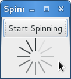

Spinner¶
Gtk.Spinner 显示一个图标大小的旋转动画。通常用来显示一个无尽的活动，代替进度条
GtkProgressBar 。
要开始一个旋转动画，调用 Gtk.Spinner.start(),
要停止旋转动画，调用 Gtk.Spinner.stop() 。
Example¶
注：原例子使用的table布局，但前面翻译的时候分明又说table已经不建议使用了， 故自作主张将例子修改为了grid布局的版本了，见谅。
1 2 3 4 5 6 7 8 9 10 11 12 13 14 15 16 17 18 19 20 21 22 23 24 25 26 27 28 29 30 31 32 33 34 35 36 37 38 39 40 41 42 | #!/usr/bin/env python
#coding:utf-8
from gi.repository import Gtk
class SpinnerAnimation(Gtk.Window):
def __init__(self):
Gtk.Window.__init__(self, title='Spinner')
self.set_border_width(3)
self.connect('delete-event', Gtk.main_quit)
self.button = Gtk.ToggleButton('Start Spinning')
self.button.connect('toggled', self.on_button_toggled)
self.button.set_active(False)
self.spinner = Gtk.Spinner()
self.grid = Gtk.Grid()
# set all column width same
self.grid.set_column_homogeneous(True)
# set all row height same
self.grid.set_row_homogeneous(True)
self.grid.attach(self.button, 0, 0, 2, 1)
#self.grid.add(self.button)
self.grid.attach_next_to(self.spinner, self.button, Gtk.PositionType.BOTTOM, 2, 2)
#self.grid.attach(self.spinner, 0, 1, 2, 2)
self.add(self.grid)
self.show_all()
def on_button_toggled(self, button):
if button.get_active():
self.spinner.start()
self.button.set_label('Stop Spinning')
else:
self.spinner.stop()
self.button.set_label('Start Spinning')
myspinner = SpinnerAnimation()
Gtk.main()
|